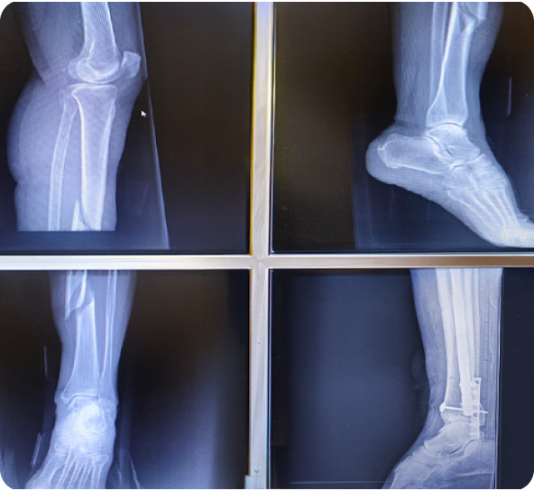

Детальний розбір Випадків
Інформація про травму
- •Жінка. 65 років. Підвернула ногу на вулиці.
- •Перелом кісток гомілки зі зміщенням. Проведено комбінований метод лікування: інтрамедулярний та накісний остеосинтези.
Період Відновлення
2
Дні
Витяжки /Гіпси
0
Шт
